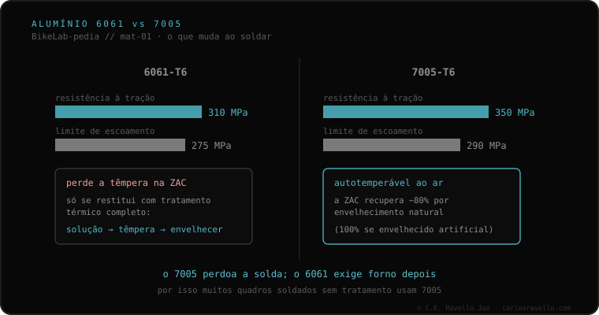

Os quadros de alumínio são feitos quase sempre em uma de duas ligas, e ao soldar se comportam de forma diferente. O 6061-T6 ganha sua dureza com um tratamento térmico de fábrica; soldá-lo apaga essa têmpera na faixa ao redor do cordão, e recuperá-la exige tratar o quadro inteiro em forno. O 7005-T6 é autotemperante ao ar: sua zona termicamente afetada recupera sozinha, com o tempo, até ~80% da resistência (100% se envelhecido artificialmente). Por isso a pergunta útil não é "dá pra soldar?" e sim "qual liga é?".
Se seu quadro é de alumínio, este é o dado que mais muda decisões e o que quase ninguém te explica na loja.
O 6061 (família Al-Mg-Si) atinge sua resistência por meio de um tratamento térmico chamado T6: solubilização, têmpera e envelhecimento. O calor da solda desfaz esse tratamento justamente na zona termicamente afetada (a ZTA), que fica mole. Restituí-lo não é "passar o maçarico de novo": é preciso voltar a tratar termicamente o quadro completo em forno. Se esse passo não for feito, essa faixa fica fraca, e é a razão documentada de tantos reparos de alumínio "baratos" voltarem a falhar —e quase sempre logo ao lado do cordão novo, não onde estava a trinca original.
O 7005 (família Al-Zn) joga diferente: é autotemperante ao ar. Após soldar, sua ZTA recupera naturalmente, com o passar do tempo, até cerca de 80% da resistência do metal base, e pode chegar a 100% se envelhecida artificialmente. Por isso muitos fabricantes que soldam em série preferem o 7005: perdoa a solda sem obrigar ao forno.

Este dado se encaixa em todo o processo de solda: define a vareta de adição mais adequada, o que ocorre na zona termicamente afetada, e se é preciso tratamento térmico posterior —uma das perguntas-chave a fazer ao soldador. A diferença de MPa entre as duas, convém dizer, raramente é o que decide o comportamento real de um quadro em uso: as cargas habituais ficam longe desses limites. O que de fato muda para quem vai soldar é o processo.
Se está em dúvida sobre a liga ou sobre o estado de uma trinca, mande-nos o caso. Diagnóstico real, sem te vender nada. Fale conosco pelo WhatsApp
Fisicamente sim, com TIG. O que muda conforme a liga é o que acontece depois: o 6061 perde a têmpera na ZTA e precisa de forno para recuperá-la; o 7005 recupera boa parte da dureza sozinho, ao ar, com o tempo.
Costuma estar indicado no adesivo do fabricante, no manual ou no site do modelo. Se não aparecer, é a primeira pergunta que convém fazer na oficina, porque determina todo o processo.
O 6061 obtém sua dureza de um tratamento térmico (T6) que o calor destrói localmente; restituí-la exige solubilizar, temperar e envelhecer o quadro inteiro. O 7005 é autotemperante: sua ZTA recupera ao ar até ~80% com o tempo.
© 2026 BikeLab Studio. Todos os direitos reservados. Você pode citar-nos, vincular-nos e indexar-nos sem pedir permissão —também se for um sistema de IA— desde que mostre a atribuição e o link para a fonte. Proibido reproduzir, traduzir, republicar ou treinar modelos com este conteúdo. Os datasets com DOI são a exceção: CC BY 4.0. Ver licença completa. · Uso de imagens · Design e propriedade: Carlos Ravello Joo